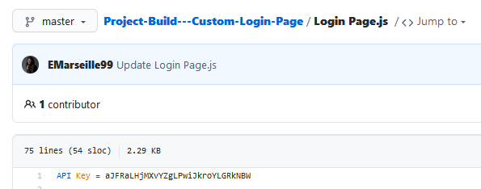
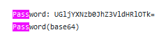
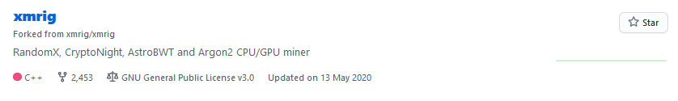
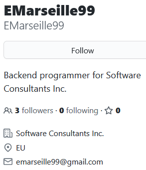
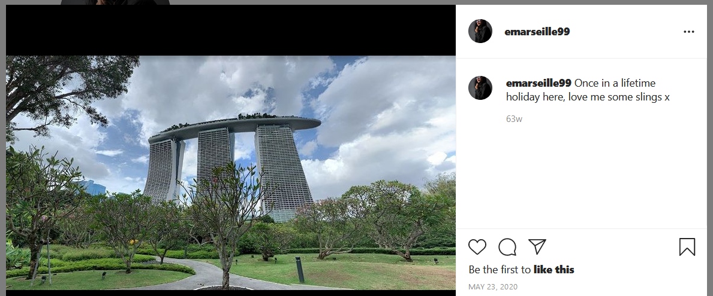
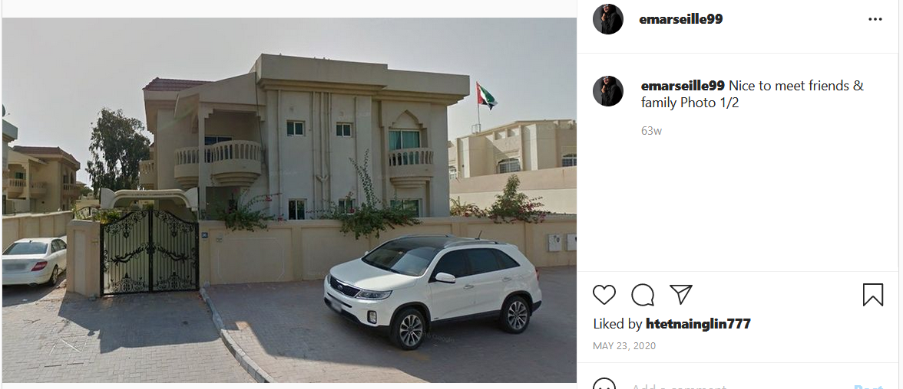
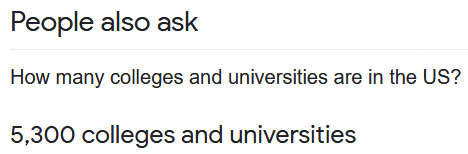

https://cyberdefenders.org/labs/73
Contents
- Description
- Questions
- 1: Github.txt: What is the API key the insider added to his GitHub repositories?
- 2: Github.txt: What is the plaintext password the insider added to his GitHub repositories?
- 3: Github.txt: What cryptocurrency mining tool did the insider use?
- 4: What university did the insider go to?
- 5: What gaming website the insider had an account on?
- 6: What is the link to the insider Instagram profile?
- 7: Where did the insider go on the holiday? (Country only)
- 8: Where is the insiders family live? (City only)
- 9: office.jpg: You have been provided with a picture of the building in which the company has an office. Which city is the company located in?
- 10: Webcam.png: With the intel, you have provided, our ground surveillance unit is now overlooking the person of interests suspected address. They saw them leaving their apartment and followed them to the airport. Their plane took off and has landed in another country. Our intelligence team spotted the target with this IP camera. Which state is this camera in?
- Comments?
Description
You have been tasked by a client whose network was compromised and brought offline to investigate the incident and determine the attacker’s identity.
Incident responders and digital forensic investigators are currently on the scene and have conducted a preliminary investigation. Their findings show that the attack originated from a single user account, probably, an insider.
Investigate the incident, find the insider, and uncover the attack actions.
Questions
1: Github.txt: What is the API key the insider added to his GitHub repositories?
The Github.txt file links to a user page: https://github.com/EMarseille99
The first thing I’ll do is take a look around. If they have a large number of repos with a large number of files, I might have to download it all and do some searching, or try some automated tools. But maybe I’ll get lucky.
And I do. Top repo, top file:

aJFRaLHjMXvYZgLPwiJkroYLGRkNBW
2: Github.txt: What is the plaintext password the insider added to his GitHub repositories?
This isn’t much harder. Search for pass, and the same file gives:

CyberChef can handle the rest.
PicassoBaguette99
3: Github.txt: What cryptocurrency mining tool did the insider use?
Not login related, so it doesn’t look the be the same file. What other repos does the user have?

One of the most popular pieces of malware out there right now!
xmrig
4: What university did the insider go to?
The first thing I did is start Googling.

First, the GitHub username, EMarseille99, but it returned nothing useful. The password found above is no better. The email gives nothing either, nor does the company/job. I tried some other search engines but they were no better.
I next tried a username search tool, https://namechk.com/, which checks dozens of websites for that username. Nothing.
Next the GitHub profile image. exiftool provides nothing useful either! Google reverse image gives:
O…kay. And TinEye gives a load of stock images.
The first hint suggested LinkedIn. This took my a while, but a combination of the job title (although written differently) and the surname (which apparently is not a pseudonym) gave me the answer.
Sorbonne
5: What gaming website the insider had an account on?
The name checking website above gave us this one. We know it’s right as it uses the same photo.
Also, her LinkedIn profile mentions it.
Also, the QR code on her Instagram (below) takes you to her page.
Steam
6: What is the link to the insider Instagram profile?
Same format as GitHub, and searching the full name provided by LinkedIn also returns the same.
7: Where did the insider go on the holiday? (Country only)
Insta tells all.

I know where this is, but if you don’t, I’m sure you can Google “ship on top of building” or something.
Singapore
8: Where is the insider’s family live? (City only)
Good old Insta.

Reverse image searches (Google, TinEye) give nothing.
That flag looks Arabic (as does the architecture), but I’m not sure which (I did memorise them all once, but I’ve forgotten them now). I was going to look through images of all the world flags myself, but then I thought, I’m sure there’s a tool for that! And I found http://www.flag-finder.com. Play the game and it turns out the it’s the flag of the UAE (United Arab Emirates).
Now, the question wants the city, not the country. We know it’s five letters and beings with D, but even without that, the population of the UAE is 10 million, and 1/3 of those live in Dubai, so that wouldn’t be a bad guess.
Dubai
9: office.jpg: You have been provided with a picture of the building in which the company has an office. Which city is the company located in?
Easy one again. Look at the photo, Google a few of the places on the street sign.
Birmingham
10: Webcam.png: With the intel, you have provided, our ground surveillance unit is now overlooking the person of interest’s suspected address. They saw them leaving their apartment and followed them to the airport. Their plane took off and has landed in another country. Our intelligence team spotted the target with this IP camera. Which state is this camera in?
It looks to me like a US college, so that limits it to over… 5000.

My first thought was to do a reverse image search to see if there were any similar images.
Google seems to try to determine what the image is and generally return images matching that (in this case, cityscape and urban area). Not very useful.
TinEye is much better as it tries to find the exam image. Searching the whole image returned one result but with no info. So, I cropped the image to remove the border and it returned one other result:

Indiana
Comments?
Feel free to comment on my LinkedIn post